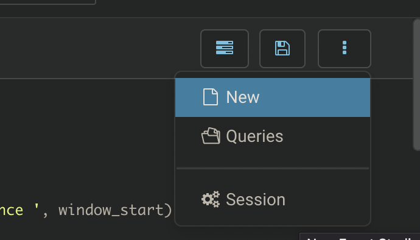
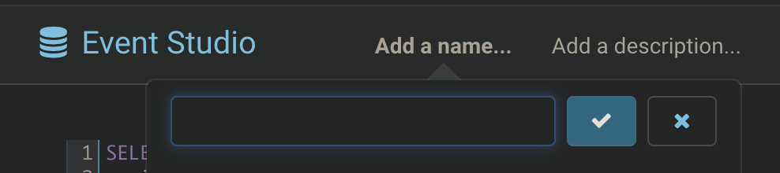
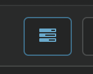

Create An Event Rule of USDT Trading Volume Over A Time Frame
In this tutorial, we will guide you to monitor USDT trading volume in ethereum. It may take 20 mins to finish.
Goal¶
Rule: If trading volume is over 100 million dollar within any 10 mins, generate an event.
Chain: Ethereum Mainnet
Token: USDT
Step 1: Design¶
Data Source¶
Since we want to monitor USDT trading volume, each single ERC20 transfer and volume must be in hands. We need table dwd_eth_erc20_event which contains all ERC20 transfer along with value, block timestamp, sender and recipient.
SQL to Event¶
The principle of 0xTick SQL design is a non-empty result is an event.
Logic¶
We simply need a SQL that aggregates transfers of USDT by every 10 mins, and filter out those total volume exceeds 100 million as non-empty results (events).
However, transfers are distributed unevenly on time axis, which requires us to introduce time window aggregation.
Let's adopt sliding window, hop function, to implement a moving 10-min aggregation and filter out non-empty results as events.
If you are not familiar with window function in streaming computing, please refer to Spark Structured Streaming Window, Flink Window.
Step 2: Development¶
- Open Event Studio IDE and create a new file.

- Type in new file name and save.

-
Use the SQL below to implement the logic described previously.
SELECT window_start, window_end, sum(cast(amount as decimal) / 1e6) as usdt_volume, concat( '[USDT] USDT has been traded over 100 million within 10 minutes since ', window_start ) as sys_insight, 'ETH' as rule_chain, 'Stable Coin' as rule_type FROM hop(dwd_eth_erc20_event, block_timestamp, INTERVAL '2 Minutes', INTERVAL '10 Minutes') e WHERE e.contract_address = '0xdac17f958d2ee523a2206206994597c13d831ec7' AND block_timestamp > '2023-02-21 16:00:00+00:00' GROUP BY window_start, window_end HAVING sum(cast(amount as decimal) / 1e6) > 100000000; -
Execute the SQL above as a dry run, and verify the result.
LIMIT 10 is attached by system implicitly to avoid overloading.
Time Travel¶
Execution of the SQL will apply the computing to full dataset, which generates historical events as a time travel, helping developers to verify the rule. However, this is not expected when deploy the SQL as a task, because you will receive all historical events once again to your channel. We encounrage developers to apply a time filter to avoid overwhelming your channels, like statement above AND block_timestamp > '2023-02-21 16:00:00+00:00'.
Output Standard¶
Each sql needs to have three field in order to be properly parsed via 0xTick bot in your channel.
- sys_insight is the short of event insight which is directly sent by 0xTick bot in channels. If you are using messaging middleware, all field selected are produced.
- rule_chain the chain this rule works for, helping search in rule market.
- rule_type the type of the rule is classified, helping search in rule market.
Step 3: Deploy the rule¶
Deploy a task requires a successful dry run, if you did not pass any dry run, the Deploy button will do it first.
- Click Deploy

-
Key in rule name which you would like to display in the rule market, and simply click Submit.
If you receive any error, please report to discord support group. Contact
-
Search your rule in rule market, and subscribe it.